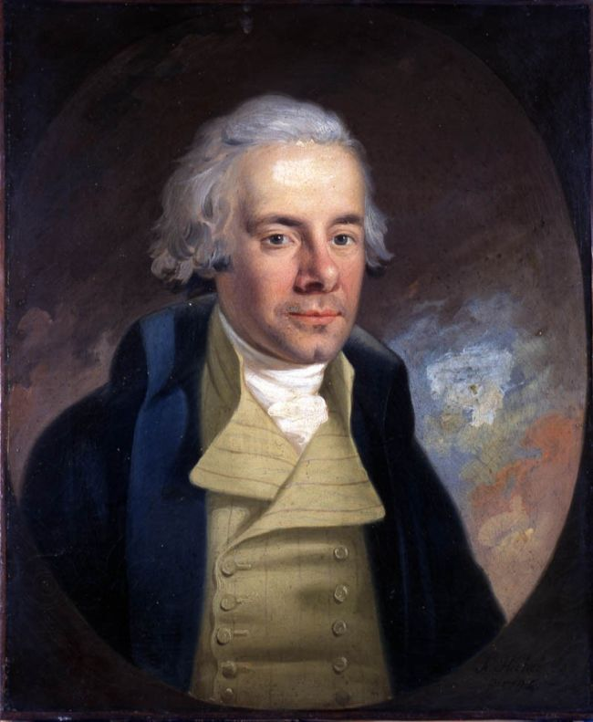

Inglaterra decreta el fin de la esclavitud en todo su imperio
La ley de abolición recibió hoy la sanción real: ochocientas mil almas de las colonias serán libres, aunque por grados y con paciencia. El Parlamento paga veinte millones a los amos; a los esclavos les paga con lo que siempre fue suyo.

La ley que abole la esclavitud en las colonias británicas recibió hoy la sanción real y es, desde esta jornada, ley del imperio. A partir del primero de agosto próximo, la condición de esclavo queda suprimida en las Antillas, en el Cabo de Buena Esperanza, en la isla Mauricio y dondequiera que ondee el pabellón británico: cerca de ochocientas mil personas, compradas, heredadas o nacidas en cautiverio, dejarán de ser propiedad de otros hombres. En las capillas y salones donde la causa se predicó durante medio siglo hubo hoy lágrimas y acciones de gracias; en los muelles de las Indias Occidentales, la noticia tardará semanas en llegar a quienes más les importa.
La libertad concedida viene con letra menuda que conviene copiar entera: los niños menores de seis años serán libres de inmediato, pero los demás deberán servir a sus antiguos amos como aprendices durante años, seis los del campo, con jornadas tasadas y sin látigo legal. Y el Parlamento ha votado veinte millones de libras esterlinas, suma enorme que se compara con la mitad del presupuesto anual del reino, para compensar a los propietarios por la pérdida de sus siervos. Ni un chelín se ha previsto para compensar a los siervos por la pérdida de sus vidas. Los amigos de la abolición tragaron ambas píldoras para que la ley pasara.
El triunfo corona una campaña que cambió la manera de pelear las causas: peticiones con centenares de miles de firmas, el testimonio de africanos que compraron su libertad y contaron el infierno por escrito, las láminas del navío negrero con su carga humana estibada como leña, el boicot al azúcar en las mesas piadosas. En 1807 cayó la trata; la esclavitud misma resistió un cuarto de siglo más, hasta que las rebeliones de los propios esclavos, la última en Jamaica hace dos años, ahogada en sangre y horcas, persuadieron a muchos de que la libertad llegaría por ley o llegaría por fuego. El Parlamento reformado eligió la ley.
Falta en la celebración el hombre que fue la causa en persona: William Wilberforce, que llevó la abolición al Parlamento durante más de cuarenta años y soportó derrota tras derrota sin soltarla, murió hace un mes justo, tres días después de saber que la ley tenía asegurado su paso. Cuentan que en su lecho habría dado gracias a Dios por vivir para ver el día en que Inglaterra consentía en pagar veinte millones por acabar con la esclavitud. Lo enterraron en la abadía de Westminster, entre los estadistas; sus compañeros de campaña, el incansable Clarkson entre ellos, heredan la vigilia del cumplimiento.
Conviene anotar lo que hoy termina y lo que no: termina, en un imperio, la propiedad legal del hombre sobre el hombre; no termina en el mundo, pues la mantienen España y el Brasil en sus plantíos, y la mantiene aquella república americana que proclamó hace medio siglo, en un papel del que este diario dio cuenta, que todos los hombres son creados iguales. Tampoco termina la vigilia: el aprendizaje forzoso se parece demasiado a lo abolido, y habrá que mirarlo de cerca. Quede para los años venideros juzgar esta jornada; por lo pronto, ochocientas mil almas tienen fecha, y la tinta de un rey vale hoy más que todas las cadenas de sus colonias.